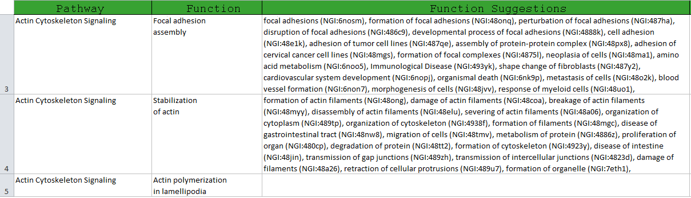
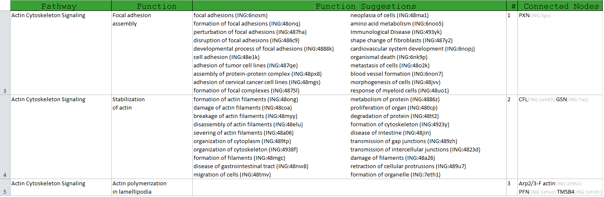
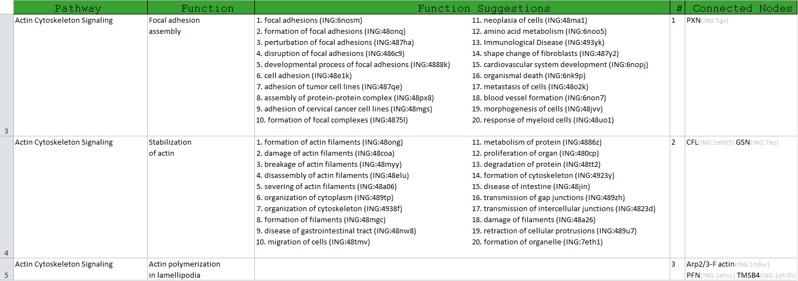
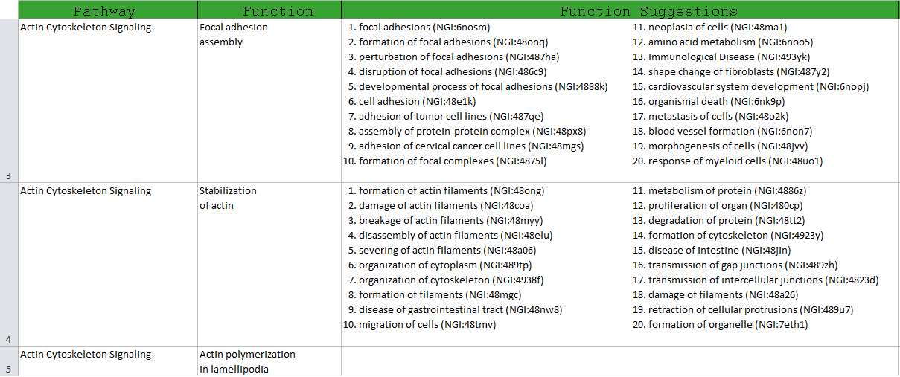
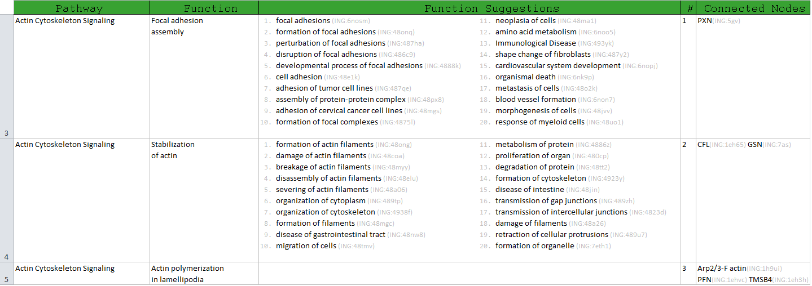
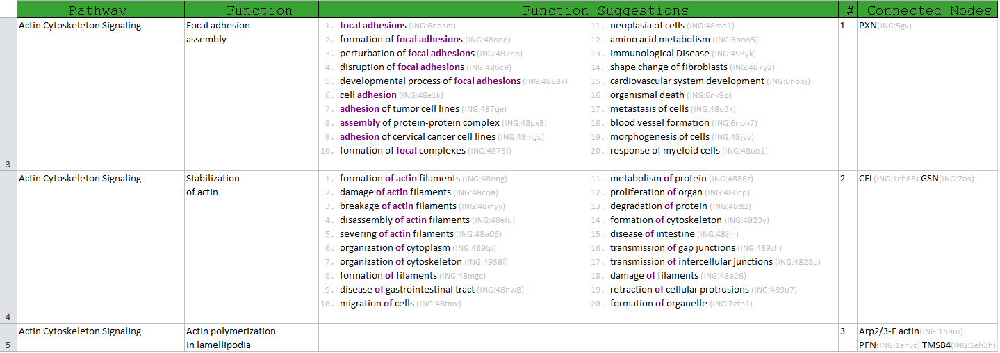

BIOLOGICAL FUNCTIONS SPREADSHEET
PROBLEM TO SOLVE
This is hardly a project, but it is a nice example of how good typography can drastically improve the experience of the users.
The task at hand was to generate a spreadsheet used internally to help content curators in their efforts to update some files. They had to replace the name from the second column with the most suitable name from the list of suggestions from the third column.
Unfortunately, this had to be done manually, a few thousand times, and this motivated me to try to make the task as easy as possible.

At this stage, the user is presented with a list of suggestions that need to be read, and pick the suggestion that makes the most sense. As you can tell, this is no easy task because it relies a lot on the working memory, and of course, the user needs to do 20 comparisons before picking the right suggestion.
We can make this easier just by sorting the suggestions using a similarity metric between two names, so that the user only needs to focus on the first several items before making a decision.
{kind=link}
This is a great improvement in usability, but there is still a lot of room for improvement in the visual department.
VISUAL SEPARATION
One of the most annoying things of the previous version is the lack of visual separation between the items. There are of course commas and spaces, but that is not enough.
The way to achieve separation, is to present the terms in the form of a vertical list. That way, each term sits on a separate row and it is easily recognizable. Knowing the fact that the final spreadsheet will have a few thousands sections, vertical space becomes important and instead of having a single column, I decided to go for a two columns list.
{kind=link}
The next step was to add some more vertical space between the sections, since the grey lines of the spreadsheet were not enough to make a clear distinction between these tall rows with a lot of content.
{kind=link}
Now the problem becomes the order of reading inside the two columns list. Just to make sure the user doesn't get confused between reading from left to right or going down the first column and continuing to the next one, I added indices for each item.
{kind=link}
There is not much left to do in the separation department, except aligning the first column, since the last item is slightly shifted to the right due to the larger size of the index, and this is breaking the vertical flow of the information.
{kind=link}
LAYERS OF INFORMATION
The improvements thus far have been great. We now have a sorted list of suggestions where the items are clearly identifiable, and the rows as well.
Going through the user scenario again reveals that the names of the suggested functions are still a little bit hard to extract from the row they sit on. We can further improve this by making the index and the ID information less visible, emphasizing in this way the information that is important for the user, the actual name of the function. The ID is also important, but only in a following step where the user has to fill in more information, and not here, where he has to pick the best name from the list.
{kind=link}
At this point I thought the job was done and that there was nothing else I could do to improve the usability. I did run through the whole scenario again, to see how easy it is to execute the task, and I noticed that in order to make the choice with confidence, I would try to convince myself that the order was right. I was actually computing the word similarity function in my mind, and that was exhausting.
It was that moment I realized I can use the already computed similarities in a visual way, to convey to the user the reason behind that specific order of the suggestions.
{kind=link}
CONCLUSION
This is good example of how focusing on the user's task, and changing small details, can improve the usability of a visual representation. Unfortunately, I did not get any feedback from the real users of this spreadsheet, but I am sure they appreciate the effort.